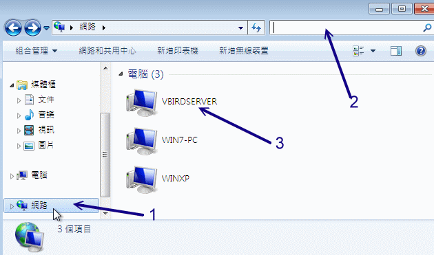
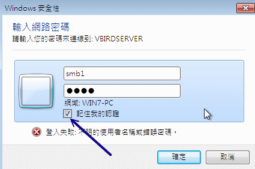
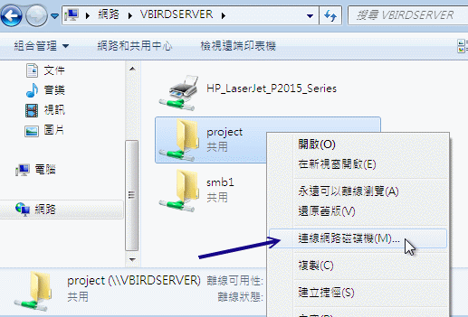
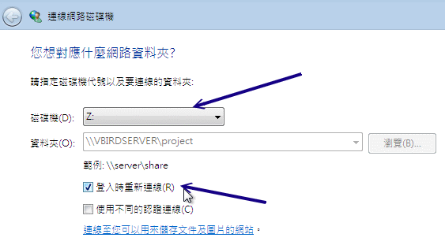
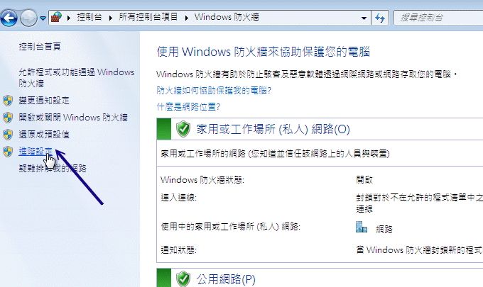
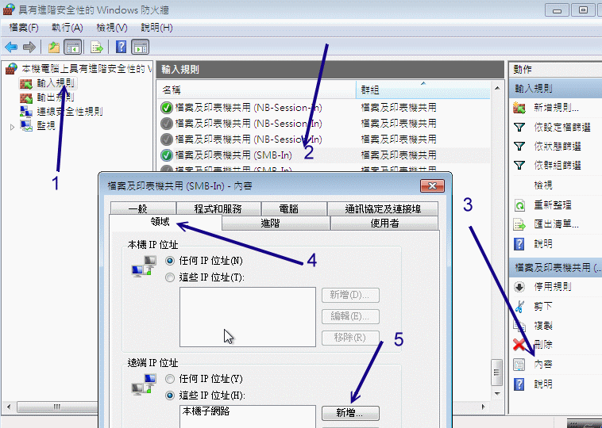
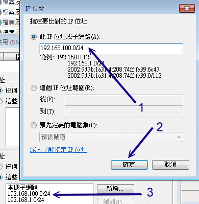
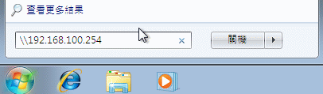

现在你已经架设好了 Samba 服务器啦！有服务器当然要有客户端来使用才是好的服务器嘛！不然要这个服务器干嘛？
而我们假设局域网络内有 Windows/Linux 系统，这两种系统都是透过 NetBIOS over TCP/IP 来连上 Samba 服务器的，
在设定之前你必须要知道的有几件事：
- 在区网内的主机最好具有相同的工作组，且具有不同的主机名；
- Windows XP pro. 最多仅能允许十个用户同时连接到自己的网芳；
- 你可以在网芳当中看到的通常是相同群组的主机；
- 可以使用『搜寻』-->『计算机』-->『输入 IP』来查到 Samba 主机；
- Windows 的网芳预设仅有同一 IP 网段的主机才能登入 (Windows 防火墙设定)！
接下来咱们就分别依照 Windows 及 Linux 系统来做说明吧！
 16.3.1 Windows 系统的使用
16.3.1 Windows 系统的使用
在 Windows 上面的搜寻网络上的网芳主机实在挺简单的，你有好几种方法可以处理：
- 打开『档案总管』，『网络上的芳邻』、『整个网络』、『Microsoft Windows Network』
就能看到属于你群组的所有计算机主机了！
- 『开始』、『搜寻』、『档案或文件夹』、『计算机或人员』、『网络上的计算机』，然后在出现的方框当中填写正确的
IP ，按下『搜寻』即可！这个方法可以适用于不在同一个群组当中的网络主机喔！
- 如果是 Windows 7 的话，只要点选文件夹即可。
举例来说，如果想要连接到我们的 Samba 主机的话，而又不知到这部 Samba 主机的 NetBIOS name ，
那利用搜寻的结果会有点类似如下的图示：

图 16.3-1、Windows 7 客户端搜寻示意图
上图左侧先点选『网络』，然后到右上方的框框中，输入 NetBIOS name，若不知道的话，就留白让 Windows 7 自己找。
如上图所示，就有找到三部网络主机啊！我们来点选一下 VBIRDSERVER 吧！ 因为要登入人家服务器，所以就被要求要输入密码。
如下图所示，请填写好你所拥有的账号与密码吧！

图 16.3-2、Windows 7 客户端登入 SAMBA 服务器示意图
若顺利登入系统了，那么就能够看到如下的图示，就是取得该服务器的可用资源啦！因为我们并没有针对 Windows 7
提供打印机的驱动程序，那部份先略过。我们现在来将 project 挂载成本机磁盘试看看：

图 16.3-3、Windows 7 客户端登入 SAMBA 服务器示意图
如上图所示，在 project 上面右键单击，选择『联机网络驱动器机』，就会出现如下的画面让你去选择挂载磁盘驱动器的参数喔：

图 16.3-4、Windows 7 客户端挂载网络驱动器机的示意图
你可以自己调整想要的驱动器号，例如预设的 Z 槽，
那么以后你的档案总管中就会生出一个 Z 槽，该磁盘槽就代表 \\192.168.100.254\project 那个分享的目录啰！
让 Windows 系统的网芳支持不同网域的 IP 联机
由于网芳的资安问题越来越严重，因此 Windows XP 之后的版本都预设仅开放本机 IP 网域的网芳联机而已。
如果你的 Windows 想要让别人可以在 Internet 或不同的 IP 网段对你联机时，你就得修改一下防火墙的设定啊！
请叫出控制台，然后点选『Windows 防火墙』就会出现如下的图示了：

图 16.3-5、Windows 7 服务器防火墙示意图
因为我们得要细部设定防火墙，因此点选上图中左侧的『进阶设定』来取得如下图示吧！

图 16.3-6、Windows 7 服务器防火墙示意图
还记得网络是双向的吧？所以，我们得先要针对输入 (从外部连到本机) 的规则来处置。如上图所示，按下 (1)输入规则，然后点选
(2)档案及打印机共享，之后到 (3)选择详细的规则内容，会出现另外一个窗口，在 (4)点选『领域』的部分来设定不同网段，
最终在 (5)的地方『新增』可进入本机的远程 IP 网段喔！按下新增会出现如下图示喔：

图 16.3-7、Windows 7 服务器防火墙示意图
如上图所示，在 (1)填写正确的 IP 或网段，然后按下 (2)确定后，就能够在
(3)的框框当中出现可联机的远程服务器啰！
如果你知道 Samba 服务器有启用 port 445 ，并且他已经分享了某个目录时，举例来说，我们的 192.168.100.254
有分享出 project 这个分享资源名称时，那么这个目录的完整写法为：『 \\192.168.100.254\project 』，
我们可以透过『开始』出现的那个方框来处理这个玩意儿！如下所示：

图 16.3-8、Windows 7 透过 port 445 联机
如果可以登入的话就会顺利登入，否则就会弹出一个要你输入账号密码的窗口，输入正确的数据即可！
呼呼！真过瘾～除此之外，我们还可以登入别人 Windows 主机的 C 或 D 槽喔！写法则变成这样：
所以说，怕了吧！俺还真害怕～所以啊，Samba 没必要时，那个 port 445 应该是可以关闭的吧！
16.3.2 Linux 系统的使用
smbclient：查询网芳分享的资源，以及使用类似 FTP 的方式上传/下载网芳
咱们的 Samba 有提供 Linux 网芳的客户端功能喔！也就是说 Linux 可以挂载 Samba 服务器也能挂载 Windows
提供的网芳啦！主要是透过 smbclient 来观察，再以 mount 来挂载文件系统哩。先来介绍一下 smbclient 这个指令吧：
# 1. 关于查询的功能，例如查出 192.168.100.254 的网芳数据
[root@clientlinux ~]# smbclient -L //[IP|hostname] [-U username]
[root@clientlinux ~]# smbclient -L //192.168.100.254 -U smb1
Enter smb1's password:
Domain=[VBIRDHOUSE] OS=[Unix] Server=[Samba 3.5.4-68.el6_0.2]
Sharename Type Comment
--------- ---- -------
project Disk smbuser's project
print$ Disk Printer drivers
IPC$ IPC IPC Service (This is vbird's samba server)
HP_LaserJet_P2015_Series Printer HP LaserJet P2015 Series
smb1 Disk Home Directories <==等一下用这个当范例
Domain=[VBIRDHOUSE] OS=[Unix] Server=[Samba 3.5.4-68.el6_0.2]
Server Comment
--------- -------
VBIRDSERVER This is vbird's samba server
Workgroup Master
--------- -------
VBIRDHOUSE VBIRDSERVER
# 从这里可以知道在目前网域当中有多少个工作组与主要的名称解析主机
|
除了这个先前用过的查询功能之外，我们可以这样简易使用网芳的：
# 2. 利用类似 FTP 的方式登入远程主机
[root@clientlinux ~]# smbclient '//[IP|hostname]/资源名称' [-U username]
# 意思是使用某个账号来直接登入某部主机的某个分享资源，举例如下：
[root@clientlinux ~]# smbclient '//192.168.100.254/smb1' -U smb1
Enter smb1's password:
Domain=[VBIRDHOUSE] OS=[Unix] Server=[Samba 3.5.4-68.el6_0.2]
smb: \> dir
# 在 smb: \> 底下其实就是在 //192.168.100.254/dmtsai 这个目录底下啦！所以，
# 我们可以使用 dir, get, put 等常用的 ftp 指令来进行数据传输了！
? :列出所有可以用的指令，常用！
cd :变换到远程主机的目录
del :杀掉某个档案
lcd :变换本机端的目录
ls :察看目前所在目录的档案
dir :与 ls 相同
get :下载单一档案
mget:下载大量档案
mput:上传大量档案
put :上传单一档案
rm :删除档案
exit:离开 smbclient 的软件功能
# 其他的指令用法请参考 man smbclient 喔！
|
mount.cifs：直接挂载网芳成为网络驱动器机
事实上，使用 smbclient 一点也不方便，因为使用的是 ftp 的功能语法，有点怪怪的～能不能像 Windows
那样，可以直接联机网络驱动器机啊？这当然没有问题！不过就需要藉由 mount.cifs 来协助了！
早期的 Samba 主要是提供 smbmount 或 mount.smbfs 这个指令来挂载 (smbfs 是 SMB filesystem 的缩写)，
不过这个指令已经被可以进行比较好的编码判断的 mount.cifs 所取代啦！mount.cifs
可以将远程服务器分享出来的目录整个给他挂载到本机的挂载点，如此一来，
远程服务器的目录就好像在我们本机的一个分割槽一样喔！可以直接执行复制、编辑等动作！这可就好用的多了！
底下我们来谈一谈怎么用这个 mount.cifs 吧！
[root@clientlinux ~]# mount -t cifs //IP/分享资源 /挂载点 [-o options]
选项与参数：
-o 后面接的参数 (options) 常用的有底下这些：
username=你的登入账号：例如 username=smb1
password=你的登入密码：需要与上面 username 相对应啊！
iocharset=本机的语系编码方式，如 big5 或 utf8 等等；
codepage=远程主机的语系编码方式，例如繁体中文为cp950
# 范例一：以 smb1 的身份将其家目录挂载至 /mnt/samba 中
[root@clientlinux ~]# mkdir /mnt/samba
[root@clientlinux ~]# mount -t cifs //192.168.100.254/smb1 /mnt/samba \
> -o username=smb1,password=4321,codepage=cp950
[root@clientlinux ~]# df
文件系统 1K-区段 已用 可用 已用% 挂载点
//192.168.100.254/smb1/
7104632 143368 6606784 3% /mnt/samba
|
经由 mount 的动作，我们就可以轻易的将远程分享出来的咚咚给他挂载到自己 Linux
本机上面！好用的很～更详细的 mount 用法，请 man mount！
nmblookup：查询 NetBIOS name 与 IP 及其他相关信息：
现在我们可以透过一些 NetBIOS 相关的功能来取得 NetBIOS name ，不过，如果你还想要知道这个 NetBIOS name 的其他信息时，
例如 IP、分享的资源等等，那可以使用 nmblookup 这个指令来搞定即可。他是这么使用的：
[root@clientlinux ~]# nmblookup [-S] [-U wins IP] [-A IP] name
选项与参数：
-S ：除了查询 name 的 IP 之外，亦会找出该主机的分享资源与 MAC 等；
-U ：后面一般可接 Windows 的主要名称管理服务器的 IP ，可与 -R 互用；
-R ：与 -U 互用，以 Wins 服务器来查询某个 Netbios name；
-A ：相对于其他的参数， -A 后面可接 IP ，藉 IP 来找出相对的 NetBIOS 数据；
# 范例一：藉由 192.168.100.254 找出 vbirdserver 这部主机的 IP 地址
[root@clientlinux ~]# nmblookup -U 192.168.100.254 vbirdserver
querying vbirdserver on 192.168.100.254
192.168.100.254 vbirdserver<00>
192.168.1.100 vbirdserver<00> <==之前鸟哥就说有两个 IP 嘛！俺的主机！
# 范例二：找出 vbirdserver 的 MAC 与 IP 等信息：
[root@clientlinux ~]# nmblookup -S vbirdserver
querying vbirdserver on 192.168.100.255 <==在区网内广播开始找！
192.168.100.254 vbirdserver<00> <==找到 IP 啰！
Looking up status of 192.168.100.254
VBIRDSERVER <00> - B <ACTIVE>
..__MSBROWSE__. <01> - <GROUP> B <ACTIVE>
VBIRDHOUSE <00> - <GROUP> B <ACTIVE>
|
如果你想要使用类似 Windows 上面，可以一看就明了各个网芳所分享的资源时，你能使用 smbtree 来直接查询喔！
这个指令更简单！直接输入就能用：
[root@clientlinux ~]# smbtree [-bDS]
选项与参数：
-b ：以广播的方式取代主要浏览器的查询
-D ：仅列出工作组，不包括分享的资源
-S ：列出工作组与该工作组下的计算机名称 (NetBIOS) 不包括各项资源目录
# 范例一：列出目前的网芳树状相关图
[root@clientlinux ~]# smbtree
Enter root's password: <==直接按 [Enter] 即可！
WORKGROUP
\\WIN7-PC
VBIRDHOUSE
\\WINXP
cli_start_connection: failed to connect to WINXP<20> (0.0.0.0).
\\VBIRDSERVER This is vbird's samba server
\\VBIRDSERVER\HP_LaserJet_P2015_Series HP LaserJet P2015 Series
\\VBIRDSERVER\IPC$ IPC Service (This is vbird's samba server)
\\VBIRDSERVER\print$ Printer drivers
\\VBIRDSERVER\project smbuser's project
[root@clientlinux ~]# smbtree -S
Enter root's password:
WORKGROUP
\\WIN7-PC
VBIRDHOUSE
\\WINXP
\\VBIRDSERVER This is vbird's samba server
# 此时仅有工作组与计算机名称而已呢！
|
其实这个指令算是服务器的相关功能啦！因为它主要的目的是查阅目前 SAMBA 有多少人来联机，
且哪些资源共享已经被使用等等的信息。所以如果你想要使用这个软件，请先安装 samba 喔！简单用法如下：
[root@www ~]# smbstatus [-pS] [-u username]
选项与参数：
-p ：列出已经使用 SAMBA 联机的程序 PID ；
-S ：列出已经被使用的资源共享状态；
-u ：只列出某个用户相关的分享数据
# 范例一：列出目前主机完整的 Samba 状态
[root@www ~]# smbstatus
Samba version 3.5.4-68.el6_0.2
PID Username Group Machine
-------------------------------------------------------------------
5993 smb1 smb1 __ffff_192.168.100.10 (::ffff:192.168.100.10)
5930 smb1 smb1 win7-pc (::ffff:192.168.100.30)
# 上半部主要在列出目前联机的状态中，主要来自那个客户端机器与登入的用户名
Service pid machine Connected at
-------------------------------------------------------
IPC$ 5930 win7-pc Fri Jul 29 15:56:03 2011
project 5930 win7-pc Fri Jul 29 15:59:25 2011
smb1 5993 __ffff_192.168.100.10 Fri Jul 29 16:32:45 2011
# 这部分则显示出，目前有几个目录被使用了？那个 smb1 代表 //IP/smb1/ 喔！
|
你可以透过这个小程序来了解到目前有多少人使用你的 SAMBA 的啦！